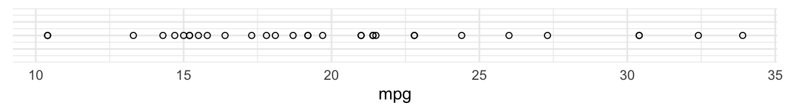
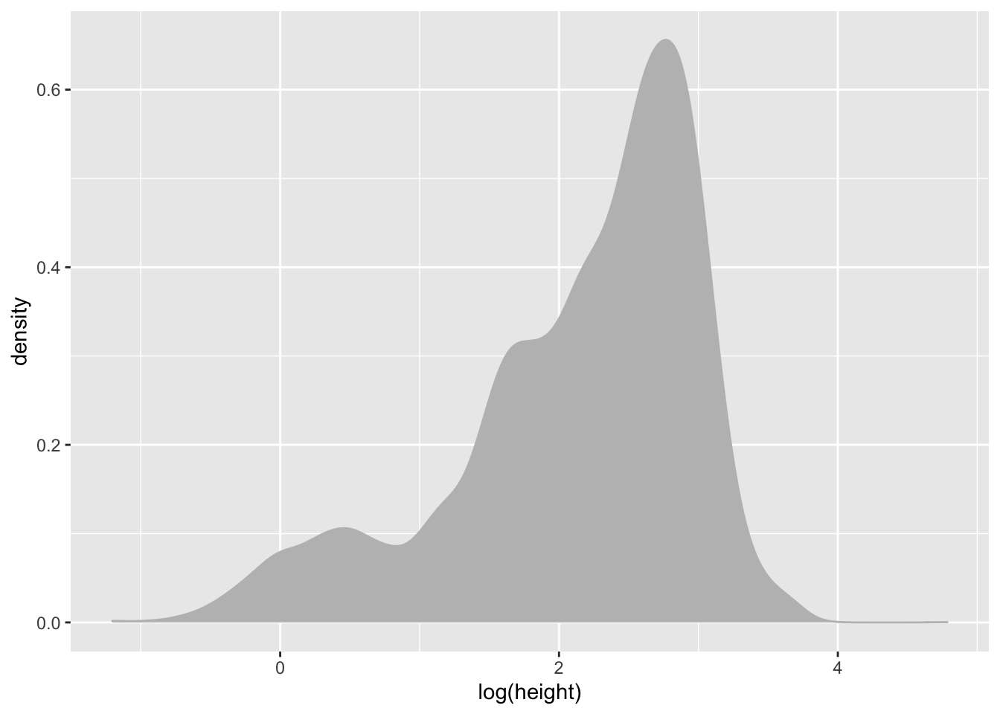

Plotting with ggplot2
Data visualisation and analysis basics
Statistical Analyses and data
Statistical analysis is the science of collecting, exploring and presenting large amounts of data to discover underlying patterns and trends
The theory of Statistical Analysis is NOT part of this course
Rather, it is to introduce you with the computational building blocks and example workflows you can build on to develop your own analysis.
The actual plots you create and statistical analyses you use will depend on the properties of the data and the questions you are trying to answer. For this, I recommend refering to many great books available on Statistics in R.
A great place to start is The Elements of Statistical Learning: Data Mining, Inference, and Prediction. by Hastie, Tibshirani & Friedman
while there are also many more on specialist topics like:
The foundation of any statistical analysis is DATA, most commonly, tabular data.
We cannot easily establish comparative size and relationships between multiple data points from tabular data.
We need a better representation to visually extract meaning.
Data Visualisation: the visual encoding of data
Data Visualisation is the visual encoding and presentation of data to facilitate understanding.
Data properties guide visual encoding
The visual encoding we use is determined by the data and the relationships and statistical properties we want to convey.
You’ll find a handy guide at datavizcatalogue.com
Once we’ve chosen the appropriate plots, we need tools to construct them.
The grammar of grahics
An abstraction which makes thinking, reasoning and communicating graphics easier.
Developed by Leland Wilkinson, particularly in “The Grammar of Graphics” 1999/2005,
Describes a consistent syntax for the construction of a wide range of complex graphics by a concise description of their components.


Building a plot from its components.
Start with some tabular data: mtcars
## mpg cyl disp hp drat wt qsec vs am gear carb
## Mazda RX4 21.0 6 160.0 110 3.90 2.620 16.46 0 1 4 4
## Mazda RX4 Wag 21.0 6 160.0 110 3.90 2.875 17.02 0 1 4 4
## Datsun 710 22.8 4 108.0 93 3.85 2.320 18.61 1 1 4 1
## Hornet 4 Drive 21.4 6 258.0 110 3.08 3.215 19.44 1 0 3 1
## Hornet Sportabout 18.7 8 360.0 175 3.15 3.440 17.02 0 0 3 2
## Valiant 18.1 6 225.0 105 2.76 3.460 20.22 1 0 3 1
## Duster 360 14.3 8 360.0 245 3.21 3.570 15.84 0 0 3 4
## Merc 240D 24.4 4 146.7 62 3.69 3.190 20.00 1 0 4 2
## Merc 230 22.8 4 140.8 95 3.92 3.150 22.90 1 0 4 2
## Merc 280 19.2 6 167.6 123 3.92 3.440 18.30 1 0 4 4
## Merc 280C 17.8 6 167.6 123 3.92 3.440 18.90 1 0 4 4
## Merc 450SE 16.4 8 275.8 180 3.07 4.070 17.40 0 0 3 3
## Merc 450SL 17.3 8 275.8 180 3.07 3.730 17.60 0 0 3 3
## Merc 450SLC 15.2 8 275.8 180 3.07 3.780 18.00 0 0 3 3
## Cadillac Fleetwood 10.4 8 472.0 205 2.93 5.250 17.98 0 0 3 4
## Lincoln Continental 10.4 8 460.0 215 3.00 5.424 17.82 0 0 3 4
## Chrysler Imperial 14.7 8 440.0 230 3.23 5.345 17.42 0 0 3 4
## Fiat 128 32.4 4 78.7 66 4.08 2.200 19.47 1 1 4 1
## Honda Civic 30.4 4 75.7 52 4.93 1.615 18.52 1 1 4 2
## Toyota Corolla 33.9 4 71.1 65 4.22 1.835 19.90 1 1 4 1
## Toyota Corona 21.5 4 120.1 97 3.70 2.465 20.01 1 0 3 1
## Dodge Challenger 15.5 8 318.0 150 2.76 3.520 16.87 0 0 3 2
## AMC Javelin 15.2 8 304.0 150 3.15 3.435 17.30 0 0 3 2
## Camaro Z28 13.3 8 350.0 245 3.73 3.840 15.41 0 0 3 4
## Pontiac Firebird 19.2 8 400.0 175 3.08 3.845 17.05 0 0 3 2
## Fiat X1-9 27.3 4 79.0 66 4.08 1.935 18.90 1 1 4 1
## Porsche 914-2 26.0 4 120.3 91 4.43 2.140 16.70 0 1 5 2
## Lotus Europa 30.4 4 95.1 113 3.77 1.513 16.90 1 1 5 2
## Ford Pantera L 15.8 8 351.0 264 4.22 3.170 14.50 0 1 5 4
## Ferrari Dino 19.7 6 145.0 175 3.62 2.770 15.50 0 1 5 6
## Maserati Bora 15.0 8 301.0 335 3.54 3.570 14.60 0 1 5 8
## Volvo 142E 21.4 4 121.0 109 4.11 2.780 18.60 1 1 4 2Encoding variables on axes
The first way we can visualise a single variable is to plot it on a single axis.
For example, here’s variable mpg (miles per gallon) plotted along a single axis:

We could use the same way to visualise a second variable, hp (horsepower)
We can combine these two axes to visualise both the values of the data on each axis as well as the relationship of the two variables:
Encoding a third variable using colour
Now that we’ve used our two axes, we might want to consider another attribute to encode a third variable with.
We can use colour to encode cyl (number of cylinders).
Principles of good data encoding
Good visualization can bring out important aspects of data, but visualization can also be used to conceal or mislead.
- Consistency: The properties of the image (visual variables) should match the properties of the data.
- Importance Ordering: Encode the most important information in the most effective way.
- Expressiveness: Tell the truth and nothing but the truth (don’t lie, and don’t lie by omission)
- Effectiveness: Use encodings that people decode better (where better = faster and/or more accurate)
Graphics in R
The R language has extensive graphical capabilities.
Graphics in R may be created by many different methods including base graphics and more advanced plotting packages such as lattice and ggplot2.
You’ll find a rich selection of graphs in R at The R Graph Gallery
ggplot2
The ggplot2 package was created by Hadley Wickham and provides an intuitive plotting system to rapidly generate publication quality graphics.
ggplot2 builds on the “Grammar of Graphics”
Resources
Paper on the grammar of graphics as the foundation for ggplot2
Online working draft of 3rd Edition of ggplot2: Elegant Graphics for Data Analysis
ggplot2 cheatsheet
ggplot2 in practice. Plotting mtcars
To demonstrate the use of ggplot2 to plot data according to the grammar of graphics, let’s recreate the mtcars plot I just showed you.
Let’s work in our attic/sketchbook script for now.
Initialising a plot
The first thing we need to do is initialise a new plot.
Function ggplot() is used to construct the initial plot object, and is almost always followed by + to add component to the plot.
Let’s load the library and create an empty plot:
library(ggplot2)
ggplot()
Specifying the data
Next thing we need to do is specify the data.
The first argument to ggplot() is the data we want to use for plotting, usually a data.frame or tibble. We can pipe that in to ggplot().
mtcars %>%
ggplot()
Mapping to Aesthetics with aes()
Now that we’ve specified our data, we can start encoding our variables to visual properties of our plot.
Lets start by mapping mpg and hp to our two axes. We do that in the second argument mapping through function aes().
Function aes() is used to specify the set of aesthetic mappings between variables in the data and visual properties in our plot.
Any aesthetics defined in ggplot(aes()) will apply to all subsequent layers unless they are overriden within the individual layers.
Mapping variables to axes x and y.
In our case, we want to map variable mpg to aesthetic x (the x axis) and variable hp to aesthetic y (the y axis).
mtcars %>%
ggplot(mapping = aes(x = mpg, y = hp))Adding geometries with geom_*()
Currently, we only have our axes, initialised with reasonably infered scales from the data.
Following the specification of data and aesthetics, we next need to specify which geometries (or geomss in ggplot) to use to present the data. The geom is a critical component that describes the type of plot used.
Several geoms are available in ggplot2 as separate functions:
geom_point()- Scatter plotsgeom_line()- Line plotsgeom_smooth()- Fitted line plotsgeom_bar()- Bar plotsgeom_boxplot()- Boxplotsgeom_jitter()- Jitter to plotsgeom_histogram()- Histogram plotsgeom_density()- Density plotsgeom_text()- Text to plotsgeom_errorbar()- Errorbars to plotsgeom_violin()- Violin plots
Plotting a scatterplot
To visualise the relationship between the data points in our two variables, and given both are numeric, we can plot them as points on a scatterplot using geom_point().
mtcars %>%
ggplot(aes(x = mpg, y = hp)) +
geom_point()Mapping a third variable
Now that we exhausted our first two options for visual encoding, we can use other aesthetics in our plot to map additional variables to. Example aesthetics available for geom_point() are
colororcolour: colour mapping.shape: mapping to symbols used for points.fill: colour mapping to shapes that have afillattribute.size: mapping to the size of points.
Let’s now map the number of cylinders cyl to the colour of points.
mtcars %>%
ggplot(aes(x = mpg, y = hp, colour = cyl)) +
geom_point()Now each point is coloured according to the value of cyl.
Because cyl is numeric, the default behaviour of R is to present it on a continuous scale, hence the colour gradient legend.
If we want to present cyl as a categorical variable, we can override that behaviour by turning it into a factor using factor()
mtcars %>%
ggplot(aes(x = mpg, y = hp, colour = factor(cyl))) +
geom_point() Adding a plot theme
Finally, any design elements can be specified in the theme layer. Theme elements can be customised using function theme()
ggplot2 also has a number of in built themes. Let’s just use one of those.
mtcars %>%
ggplot(aes(x = mpg, y = hp, fill = factor(cyl))) +
geom_point() +
theme_minimal() Data visualisation in practice: Exploring individual with ggplot2
Now let’s start putting some the tools and concepts we just learned to use with our data/individual.csv data.
Let’s say we are interested in exploring the relationship between individual plant stem_diameter and height.
Let’s also say that, from previous knowledge, we expect that the relationship may vary according to the growth_form
So lets use data visualisation to explore the properties and relationships between the three variables.
Start by loading the ggplot2 as well as package magrittr so we have access to the pipe. Let’s read in the data and also narrow it down to our variables of interest using dplyr::select()
library(ggplot2)
library(magrittr)
individual <- readr::read_csv(here::here("data", "individual.csv")) %>%
dplyr::select(stem_diameter, height, growth_form)##
## ── Column specification ────────────────────────────────────────────────────────
## cols(
## .default = col_character(),
## date = col_date(format = ""),
## stem_diameter = col_double(),
## measurement_height = col_double(),
## height = col_double(),
## point_id = col_double(),
## stem_distance = col_double(),
## stem_azimuth = col_double(),
## decimal_latitude = col_double(),
## decimal_longitude = col_double(),
## easting = col_double(),
## northing = col_double(),
## elevation = col_double(),
## elevation_uncertainty = col_double(),
## stem_lat = col_double(),
## stem_lon = col_double()
## )
## ℹ Use `spec()` for the full column specifications.Let’s also create a new .R script and save it as analysis.R in the root of our project.
Copy that last section of code as the first few lines of our analysis.R script.
Exploratory Data Analysis
Before we start exploring the relationship between variables, it’s important to understand the statistical properties of the underlying data. Statistical summaries such as the output of summary() are a good starting point.
summary(individual)## stem_diameter height growth_form
## Min. : 1.00 Min. : 0.30 Length:14961
## 1st Qu.: 11.60 1st Qu.: 5.30 Class :character
## Median : 16.50 Median : 10.60 Mode :character
## Mean : 20.21 Mean : 11.27
## 3rd Qu.: 26.30 3rd Qu.: 16.20
## Max. :373.30 Max. :119.80
## NA's :1346 NA's :1711But data visualisation can be an even more powerful tool in expressing statistical properties of our data.
Distribution of data
To begin with, we can explore the properties of individual variables, starting with the distribution of values.
Let’s just work in our code attic/sketckbook.R script for now. We’ll transfer final plots to analysis.R when we are happy with them.
Distribution of stem_diameter
Lets start with stem_diameter which is a numeric variable. As such we can use geom_density to plot the distribution of the data.
individual %>%
ggplot(aes(x = stem_diameter)) +
geom_density()## Warning: Removed 1346 rows containing non-finite values (stat_density).The distribution across all our data looks quite skewed towards lower values and a lomg tail of larger values and even shows a small dip in a certain range of stem_diameter.
Many statistical tests assume normality of the data and a common tranformation to such skewed numeric data might be to log them. ggplot allows us to perform such tranformations during plotting and prints it as part of the variable axes label.
individual %>%
ggplot(aes(x = log(stem_diameter))) +
geom_density()## Warning: Removed 1346 rows containing non-finite values (stat_density).Still rather wonky and may well violate assumptions of statistical tests down the line but it is slightly better than before so just for demonstration purposes, let’s carry own presenting our data on a log scale.
Applying aesthetics to geometries
One thing that can make such plots visually more appealing is to fill in the area under the distribution curve.
This also gives us the opportunity to dig into what exactly the aesthetic mapping in aes() is doing.
Let’s say we wanted to fill in the area with the colour grey. Our first instinct might me to use aes() in ggplot() and map aesthetic fill to the name of the colour "grey".
individual %>%
ggplot(aes(x = log(stem_diameter), fill = "grey")) +
geom_density()## Warning: Removed 1346 rows containing non-finite values (stat_density).But this has unexpected results! This happens because we are supplying the colour name within aes(). aes() is for mapping variables to aesthetics and expects a variable name in our data or a vector of values.
Here we are giving it a single character value which it converts to a factor. It then uses it’s default function for creating categorical colour scales to assign the first colour in that scale (red) to our single factor level "grey". The important point here is that R is not interpretting "grey" as a colour, but as a categorical variable, as it did for factor(cyl).
To specify explicitly the fill colour of our density geom, we instead supply it as an argument to our geom_density() function, outside of aes(). Let’s change both the colour of the line and fill to "grey".
individual %>%
ggplot(aes(x = log(stem_diameter))) +
geom_density(colour = "grey", fill = "grey")## Warning: Removed 1346 rows containing non-finite values (stat_density).Distribution of height
We can similarly create a density plot for height
individual %>%
ggplot(aes(x = height)) +
geom_density(colour = "grey", fill = "grey")## Warning: Removed 1711 rows containing non-finite values (stat_density).It’s also a bit skewed so lets go ahead and work with log() values again.
individual %>%
ggplot(aes(x = log(height))) +
geom_density(colour = "grey", fill = "grey")## Warning: Removed 1711 rows containing non-finite values (stat_density).
Distribution of growth_form
In contrast to stem_diameter and height, growth_form is a categorical variable.
As such, we use geom_bar() to plot a barplot of the counts of values of each growth_form in our data. A barplot plots categorical data across the x axes and numeric data (in this case counts on the y axis).
Let’s also map colour aesthetics to growth form.
individual %>%
ggplot(aes(x = growth_form, colour = growth_form, fill = growth_form)) +
geom_bar()We can see that there are very few entries for liana and also a whole bunch of NAs in growth_form. So let’s remove any such rows from our data by using dplyr::filter(). Let’s assign this new data to a new analysis_df and work with that from now on.
analysis_df <- individual %>%
dplyr::filter(!is.na(growth_form), growth_form != "liana") Let’s also order our bars in order of ascending counts. The simplest way to do this is to convert growth_form to a factor and specify the ordering of the factor levels.
To do that let’s create a vector of growth_form unique values, ordered according to their counts in the raw data.
We can do this by using table to get the counts, order to order them in ascending order and names to extract the names!
gf_levels <- table(analysis_df$growth_form) %>%
sort() %>%
names()We can then specify the level order when we mutate growth_form to a factor using gf_levels through argument levels in factor.
analysis_df %<>%
dplyr::mutate(growth_form = factor(growth_form,
levels = gf_levels))Let’s move those data preparation steps to analysis.R
Let’s have a look at our barplot now:
analysis_df %>%
ggplot(aes(x = growth_form, colour = growth_form, fill = growth_form)) +
geom_bar()The order of the levels in growth_form now dictates the order in which the bars are plotted!
Finally, let’s just add a few extra touches to make the plot even more visually clear.
Let’s flip the axis by mapping growth_form to y, that prevents growth_form axes labels from overlapping.
Let’s also remove the superfluous legend and reduce the opacity of our bars so we can see the scales through them
analysis_df %>%
ggplot(aes(y = growth_form, colour = growth_form, fill = growth_form)) +
geom_bar(alpha = 0.5, show.legend = FALSE)That’s better.
Let’s keep this plot and move it to our analysis script as fig 1.
Plotting multiple densities according to the values of a second variable
When plotting the density distributions we ended up having one plot per variable with little understanding of how values where distributed across the various growth forms.
However, ggplot and the grammar of graphics allows us to build more informative plots, by combining the information in categorical variables to present cross variable distributions.
The grammar of graphics allows to easily plot the same properties of interest across groups dictated by other aesthetics.
Let’s explore what this means by focusing on the distribution of stem_diameter across the growth_form categories in our sketchbook.R.
We can plot out a separate density curve for each growth form by mapping categorical variable grow_form to aes() argument group.
analysis_df %>%
ggplot(aes(x = log(stem_diameter), group = growth_form)) +
geom_density()## Warning: Removed 1031 rows containing non-finite values (stat_density).Now we have separate distribution curves for each growth_form!
This first pass is not however visually easy to interpret. Let’s assign growth_form to some additional aesthetics to make the visual encoding clearer.
We can in fact get rid of the group argument and use fill and colour instead. The grouping behaviour is equivalent.
analysis_df %>%
ggplot(aes(x = log(stem_diameter), colour = growth_form, fill = growth_form)) +
geom_density()## Warning: Removed 1031 rows containing non-finite values (stat_density).To make things even clearer we can supply additional argument to geom_density.
Let’s decrease the opacity of each density geom and trim it to the ranges of values across each growth_form.
analysis_df %>%
ggplot(aes(x = log(stem_diameter), colour = growth_form, fill = growth_form)) +
geom_density(alpha = 0.5, trim = TRUE)## Warning: Removed 1031 rows containing non-finite values (stat_density).That’s a lot clearer, and now we can see that overall the distribution of log(stem_diameter) across growth forms follows a broably bimodal distribution. However, the distributions across each growth formal appear more normal.
To allow us to focus more on the individual distributions, we can use facet_wrap() and formula ~growth_form to create individual panels for each growth form on a grid:
analysis_df %>%
ggplot(aes(x = log(stem_diameter), colour = growth_form, fill = growth_form)) +
geom_density(alpha = 0.5, trim = TRUE) +
facet_wrap(~growth_form)## Warning: Removed 1031 rows containing non-finite values (stat_density).Encoding multiple distribution with violin plots
Another way we can present the distribution of a continuous variable in a compact way and grouped according to the value of a categorical variable is to use a violin plot.
Let’s straight away add some colour aesthetics also.
analysis_df %>%
ggplot(aes(x = log(stem_diameter), y = growth_form, colour = growth_form, fill = growth_form)) +
geom_violin(alpha = 0.5, trim = T)## Warning: Removed 1031 rows containing non-finite values (stat_ydensity).Adding statistical summaries with geom_boxplot()
We can go a step further and add statistical information about our variable by overlaying a boxplot (or box and whiskers plot). The boxplot compactly displays the distribution of a continuous variable by visualising five key summary statistics (the median, two hinges and two whiskers), and all “outlying” points individually.
Let’s also suppress the legend for the box plot layer and reduce the opacity.
analysis_df %>%
ggplot(aes(x = log(stem_diameter), y = growth_form, colour = growth_form, fill = growth_form)) +
geom_violin(alpha = 0.5, trim = T) +
geom_boxplot(alpha = 0.7, show.legend = FALSE)## Warning: Removed 1031 rows containing non-finite values (stat_ydensity).## Warning: Removed 1031 rows containing non-finite values (stat_boxplot).The central line in each box corresponds to the median.
The lower and upper hinges correspond to the first and third quartiles (the 25th and 75th percentiles) and define the Interquartile range (IQR).
The whiskers are calculated from the IQR and identify points considered statistical outliers.
Again, here we can see the bimodal distribution across all values, the two loose groups of multibole trees, single bole trees and small trees, but this time we have a much more informative and compact plot.
We would still need a plot per variable though.
We could try and utilise facet_grid to combine a boxplot for each continuous variable stem_diameter and height into a single plot. Hovever, there isn’t a variable in the data in the current form that could be used to facet on. The data is instead held acroos two separate columns, stem_diameter and height.
Pivoting data to longer
To take advantage of facet_wrap we need to pivot our data into a longer format using pivot_longer from package tidyr.
pivot_longer() “lengthens” data, increasing the number of rows and decreasing the number of columns. We use it to stack the values of stem_diameter and height into a column called value and store the original column names which define the variable each value relates to in a new column var. The values of growth_form are duplicated and stacked.
analysis_df %>%
tidyr::pivot_longer(cols = c(stem_diameter, height),
names_to = "var",
values_to = "value")## # A tibble: 27,776 x 3
## growth_form var value
## <fct> <chr> <dbl>
## 1 single bole tree stem_diameter 17.1
## 2 single bole tree height 15.2
## 3 single bole tree stem_diameter 13.7
## 4 single bole tree height 9.8
## 5 single bole tree stem_diameter 12.3
## 6 single bole tree height 7.7
## 7 single bole tree stem_diameter 12.1
## 8 single bole tree height 15.2
## 9 single bole tree stem_diameter 29.2
## 10 single bole tree height 16.7
## # … with 27,766 more rowsNote that the number of rows is now twice the size of the original data because two columns have been stacked. Those columns have also now been removed.
With data in this format, we can use variable var to create a facet for each variable.
Figure 2: Data characteristics of our raw data
Let’s add the pivot as a step in our plotting pipe
analysis_df %>%
tidyr::pivot_longer(cols = c(stem_diameter, height),
names_to = "var",
values_to = "value") %>%
ggplot(aes(x = log(value), y = growth_form, colour = growth_form, fill = growth_form)) +
geom_violin(alpha = 0.5, trim = T) +
geom_boxplot(alpha = 0.7, show.legend = FALSE) +
facet_grid(~var)## Warning: Removed 2388 rows containing non-finite values (stat_ydensity).## Warning: Removed 2388 rows containing non-finite values (stat_boxplot).Hurray! Now we have a super informative plot, containing visual encodings of distributions and statistical summaries for both our continuous variables in one compact plot!
Let’s move that to analysis.R as Figure 2
Analysis in practice: fitting and visualising a simple linear model
Now that we’ve explored our variables, it’s time to start looking at the statistical relationship between them.
Analysing the relationship between log(stem_diameter) and log(height)
First we might want to look at the overall relationship between our two continuous variables and we can start with fitting a simple linear regression model.
In R, we use lm to fit linear models. It can be used to carry out regression, single stratum analysis of variance and analysis of covariance.
Fitting a linear model
We specify our model through a formula log(stem_diameter) ~ log(height). This translates to log stem diameter as a function of height where stem_diameter is the response variable and height the predictor.
lm_overall <- lm(log(stem_diameter) ~ log(height), analysis_df)
lm_overall##
## Call:
## lm(formula = log(stem_diameter) ~ log(height), data = analysis_df)
##
## Coefficients:
## (Intercept) log(height)
## 0.5609 0.9439By default lm prints a rather terse summary of the model.
An easy way to print nice and tidy outputs of most models in R is by using functions from package broom.
lm_overall %>%
broom::glance()## # A tibble: 1 x 12
## r.squared adj.r.squared sigma statistic p.value df logLik AIC BIC
## <dbl> <dbl> <dbl> <dbl> <dbl> <dbl> <dbl> <dbl> <dbl>
## 1 0.679 0.679 0.487 24613. 0 1 -8132. 16271. 16293.
## # … with 3 more variables: deviance <dbl>, df.residual <int>, nobs <int>Glance accepts a model object and returns a tibble with exactly one row of model summaries. The summaries are typically goodness of fit measures, p-values for hypothesis tests on residuals, or model convergence information.
lm_overall %>%
broom::tidy()## # A tibble: 2 x 5
## term estimate std.error statistic p.value
## <chr> <dbl> <dbl> <dbl> <dbl>
## 1 (Intercept) 0.561 0.0145 38.7 5.36e-308
## 2 log(height) 0.944 0.00602 157. 0Tidy summarizes information about the components of a model. In the case of a linear model, components are the parameters associated with a regression i.e. the intercept and slope.
Visualising our overall model
To plot the relationship that the lm has fit, we plot a scatterplot using geom_point() and map log(height) to x (the predictor) and log(stem_diameter) to y (the response).
We can also add a line to our plot using geom_smooth(). This plots a smooth over the data by default but can use method lm to plot lines using a linear model.
analysis_df %>%
ggplot(aes(x = log(height), y = log(stem_diameter))) +
geom_point(alpha = 0.2) +
geom_smooth(method = "lm")## `geom_smooth()` using formula 'y ~ x'## Warning: Removed 2262 rows containing non-finite values (stat_smooth).## Warning: Removed 2262 rows containing missing values (geom_point).Including an interaction with growth_form
Inspecting the plot we can clearly see sub groups in our data. We already know that both our variables have very different distributions across growth_form. So let’s see if our model improves if we include growth_form in our model specification.
Growth form is a categorical variable so when we include it in our regression, lm will fit separate coefficients for our model at every level of the factor. To include it, we add it to the predictor side of our formula. If we include it as an additive effect through +, only the intercept will vary across factor levels. If we fit it as an interaction using * both the slope and intercept are allowed to vary.
lm_growth <- lm(log(stem_diameter) ~ log(height) * growth_form, analysis_df) We can again examine our model using broom
lm_growth %>%
broom::glance()## # A tibble: 1 x 12
## r.squared adj.r.squared sigma statistic p.value df logLik AIC BIC
## <dbl> <dbl> <dbl> <dbl> <dbl> <dbl> <dbl> <dbl> <dbl>
## 1 0.799 0.799 0.386 4195. 0 11 -5418. 10862. 10957.
## # … with 3 more variables: deviance <dbl>, df.residual <int>, nobs <int>We can see that model coverage as indicated by r.squared is now higher and the p.value is still significant
lm_growth %>%
broom::tidy()## # A tibble: 12 x 5
## term estimate std.error statistic p.value
## <chr> <dbl> <dbl> <dbl> <dbl>
## 1 (Intercept) 0.187 0.0957 1.96 5.02e- 2
## 2 log(height) 0.952 0.0490 19.4 1.08e-82
## 3 growth_formsapling 0.223 0.0992 2.25 2.46e- 2
## 4 growth_formsingle shrub -0.690 0.109 -6.34 2.44e-10
## 5 growth_formsmall shrub 0.255 0.107 2.38 1.73e- 2
## 6 growth_formmulti-bole tree 1.16 0.103 11.2 4.57e-29
## 7 growth_formsingle bole tree 1.38 0.0978 14.1 1.27e-44
## 8 log(height):growth_formsapling -0.643 0.0778 -8.27 1.45e-16
## 9 log(height):growth_formsingle shrub 0.251 0.0645 3.89 1.00e- 4
## 10 log(height):growth_formsmall shrub -0.561 0.151 -3.73 1.93e- 4
## 11 log(height):growth_formmulti-bole tree -0.316 0.0519 -6.08 1.22e- 9
## 12 log(height):growth_formsingle bole tree -0.376 0.0497 -7.57 3.88e-14We see the model coefficients for each growth form slope and interaction.
The first 2 row show the intercept and slope for the first level of growth_form ie small tree which is considered the reference level.
The rest of the rows show the intercepts and slopes with respect to the values of the coeffients for small tree so they represent differences from the reference level, level 1.
Visualising our model
To include the interaction with growth_form we apply a grouping to our scatterplot through aesthetic colour.
analysis_df %>%
ggplot(aes(x = log(height), y = log(stem_diameter), colour = growth_form)) +
geom_point(alpha = 0.1) +
geom_smooth(method = "lm") ## `geom_smooth()` using formula 'y ~ x'## Warning: Removed 2262 rows containing non-finite values (stat_smooth).## Warning: Removed 2262 rows containing missing values (geom_point).Excellent! We now have specified both models and visualised them! Our analysis is complete.
NOTE: the geom_smooth method of plotting model lines is not ideal and you will likely take more formal approaches to calculating and plotting confidence intervals. But for the purposes of of this workshop, we’ll stick with this.
Lets add all our models and plots to our analysis.R script.
Lets also add comment sections with machine readable names to our analysis.R script.
Your analysis.R script should now look like this.
# analysis-setup
library(ggplot2)
library(magrittr)
individual <- readr::read_csv(here::here("data", "individual.csv")) %>%
dplyr::select(stem_diameter, height, growth_form)
# analysis-filter-data
analysis_df <- individual %>%
dplyr::filter(!is.na(growth_form),
growth_form != "liana")
# analysis-set-factor-levels
gf_levels <- table(analysis_df$growth_form) %>%
sort(decreasing = TRUE) %>%
names()
analysis_df %<>%
dplyr::mutate(growth_form = factor(growth_form,
levels = gf_levels))
# analysis-fig1-barplot
analysis_df %>%
ggplot(aes(y = growth_form, colour = growth_form,
fill = growth_form)) +
geom_bar(alpha = 0.5, show.legend = FALSE)
# analysis-fg2-violinplots
analysis_df %>%
tidyr::pivot_longer(cols = c(stem_diameter, height),
names_to = "var",
values_to = "value") %>%
ggplot(aes(x = log(value), y = growth_form, colour = growth_form, fill = growth_form)) +
geom_violin(alpha = 0.5, trim = T, show.legend = FALSE) +
geom_boxplot(alpha = 0.7, show.legend = FALSE) +
facet_grid(~var)
# analysis-lm-overall
lm_overall <- lm(log(stem_diameter) ~ log(height), analysis_df)
lm_overall %>%
broom::glance()
lm_overall %>%
broom::tidy()
# analysis-lm-fig3-overall
analysis_df %>%
ggplot(aes(x = log(height), y = log(stem_diameter))) +
geom_point(alpha = 0.2) +
geom_smooth(method = "lm")
# analysis-lm-growth
lm_growth <- lm(log(stem_diameter) ~ log(height) * growth_form, analysis_df)
lm_growth %>%
broom::glance()
lm_growth %>%
broom::tidy()
# analysis-lm-fig4-growth
analysis_df %>%
ggplot(aes(x = log(height), y = log(stem_diameter), colour = growth_form)) +
geom_point(alpha = 0.1) +
geom_smooth(method = "lm")